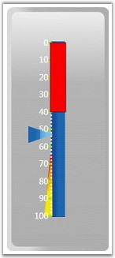

Multiple scales can be added to the linear gauge by using different properties. The properties are listed below with description.
Table 16: Property Table
|
Property |
Description |
|
Minimum |
To set the minimum value for the LinearScale. Default value is set to 0. |
|
Maximum |
To set the maximum Value for the LinearScale. Default value is set to 0. |
|
MinorIntervalValue |
The value for the major intervals could be mentioned using this property. Default value is set to 0. |
|
MajorIntervalValue |
The value for the minor intervals could be mentioned using this property. Default value is set to 0. |
|
ScaleBarSize |
Used to set the size for the scale bar. Default value is set to 0. |
|
ScaleBarLength |
Gets or sets the length of the scale. Default value is set to 0. |
|
ScaleStyle |
Gets or sets the linear scale style. Default value is Rectangle. |
|
RadiusX |
Gets or sets the corner radius (RadiusX) for Rounded Rectangle Scale. Default value is set to 5. |
|
RadiusY |
Gets or sets the corner radius (RadiusY) for Rounded Rectangle Scale. Default value is set to 5. |
|
BorderWidth |
Border thickness of the LinearScale can be given using this property. Default value is set to 0. |
|
BorderBrush |
Using which the border brush values can be given. Default value is Transparent. |
|
BackgroundBrush |
Using which the background brush for the LinearScale can be given. Default value is Transparent. |
|
Scale Direction |
Using this property, the Scale direction can be changed from top-to-bottom or vice versa. It also changes the alignment of the children accordingly. Default value is Clockwise. |
|
[XAML]
<!--Hosting Digital Gauge.--> <my:LinearGauge Grid.Column="1" Height="310" Name="linearGauge1" Width="131.188" Margin="15.36,3,27,10"> <my:LinearGauge.Scales> <my:LinearScale BorderWidth="3" MajorIntervalValue="10" Maximum="100" Minimum="0" MinorIntervalValue="2" ScaleBarLength="220" ScaleBarSize="15" ScaleStyle="Rectangle" ShadowOffset="0" ScaleDirection="CounterClockwise"> </my:LinearScale> </my:LinearGauge.Scales> </my:LinearGauge> |
|
[C#]
LinearScale scale = new LinearScale(); scale.BackgroundBrush = Brushes.GreenYellow; scale.BorderBrush = Brushes.DarkGreen; scale.BorderWidth = 2; scale.Minimum = 0; scale.Maximum = 50; scale.MinorIntervalValue = 2; scale.MajorIntervalValue = 10; scale.ScaleBarLength = 220; scale.ScaleBarSize = 25; scale.ScaleStyle = LinearScaleStyle.RoundedRectangle; scale.ScaleDirection = ScaleDirection.CounterClockwise this.lineargauge1.Scales.Add(scale); |
The following figure displays linear gauge with counterclockwise scale.

Figure 67: Linear Gauge with CounterClockwise Scale